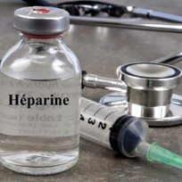
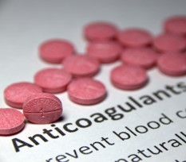

Podemos dividir os anticoagulantes em 2 grandes grupos:
Clique nas palavras e veja a diferença!
A heparina não fracionada(HNF) tem como principal mecanismo de ação a potencialização da antitrombina com consequente diminuição da formação de trombina e fibrina.
Também inativa o fator Xa e outros.
A heparina de baixo peso molecular(HBPM) inativa mais especificamente o fator Xa.
Representando anticoagulantes orais, temos os antagonistas da vitamina K(VKA), sendo o principal deles a varfarina. Eles inibe os fatores K-dependentes (II, VII, IX, X)
Dentre os anticoagulantes orais temos também os DOACs (anticoagulantes orais diretos) que são classificados em dois grupos:
- inibidores diretos da trombina(dabigatrana)
- inibidores do FXa(rivaroxabana, apixabana, endoxabana)
